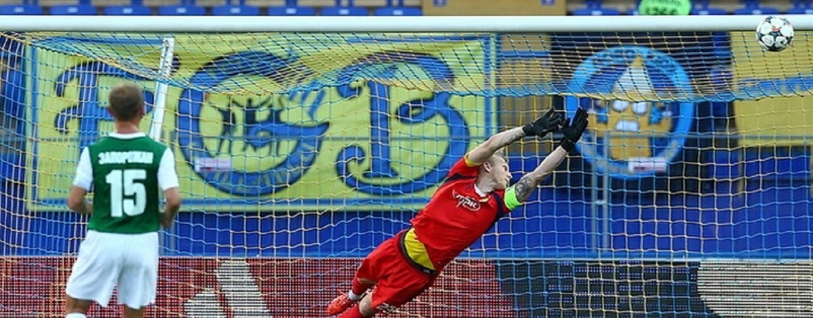

-

Міжнародні та локальні трансфери футболістів
Комітет є постійно діючим регулятивним органом Федерації футболу України з питань трансферів, а також діє відповідно до регламентних положень UEFA та FIFA щодо реєстрації та контролю виконання трансферних контрактів
-

Навчання та ліцензування посередників
Комітет здійснює навчання та підготовку до екзамену на здобуття постійної ліцензії футбольного посередника, проводить екзамени видає постійні ліцензії та разові ліцензії на здійснення окремих трансферів
-

Реєстрація трансферних контрактів
Згідно з регламентними нормами Федерації футболу України, FIFA та UEFA, Комітет здійснює реєстрацію всіх контрактів футболістів з клубами, контрактів на посередництво, видає та здійснює запити на міжнародні трансферні сертифікати, забезпечує оформлення міжнародних трансферів футболістів в системі TMS FIFA